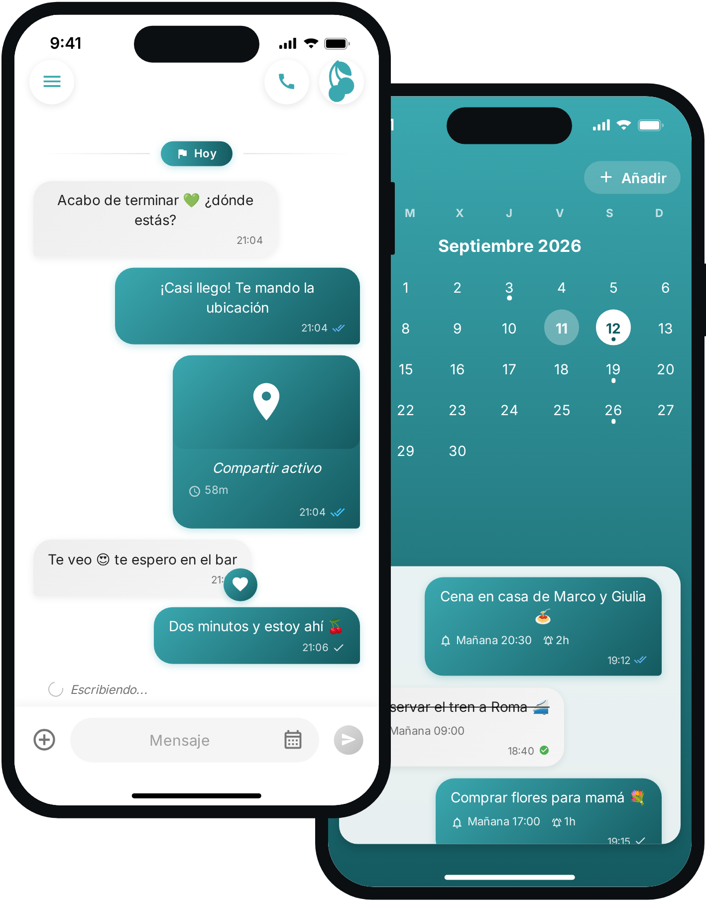
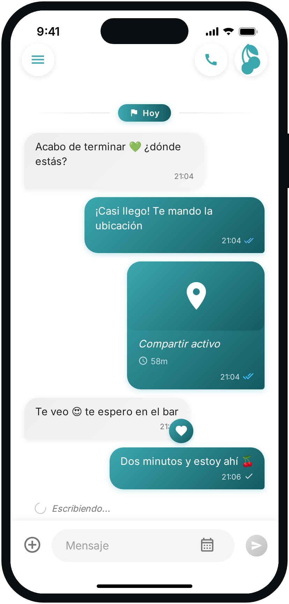
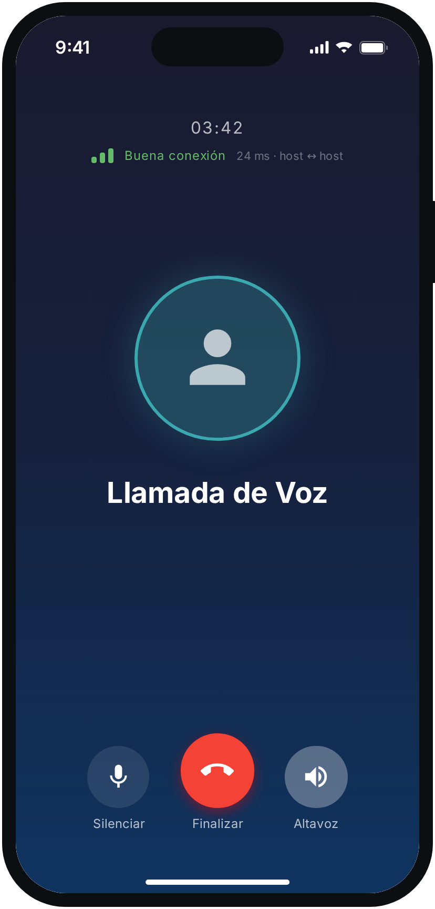
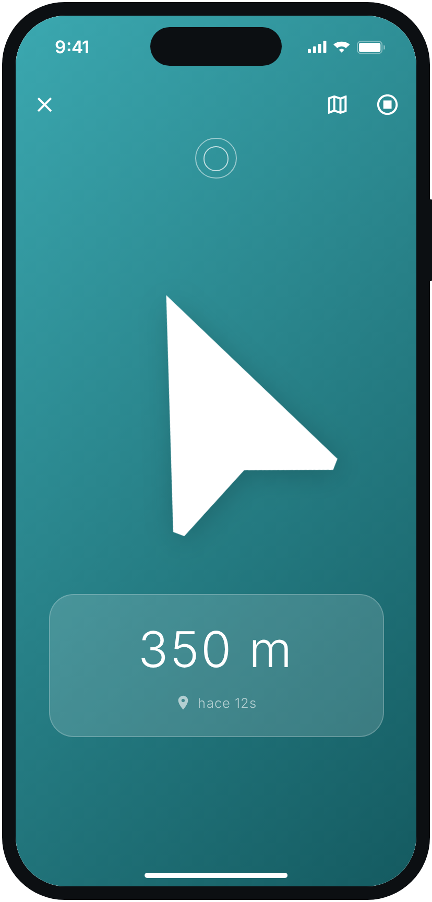
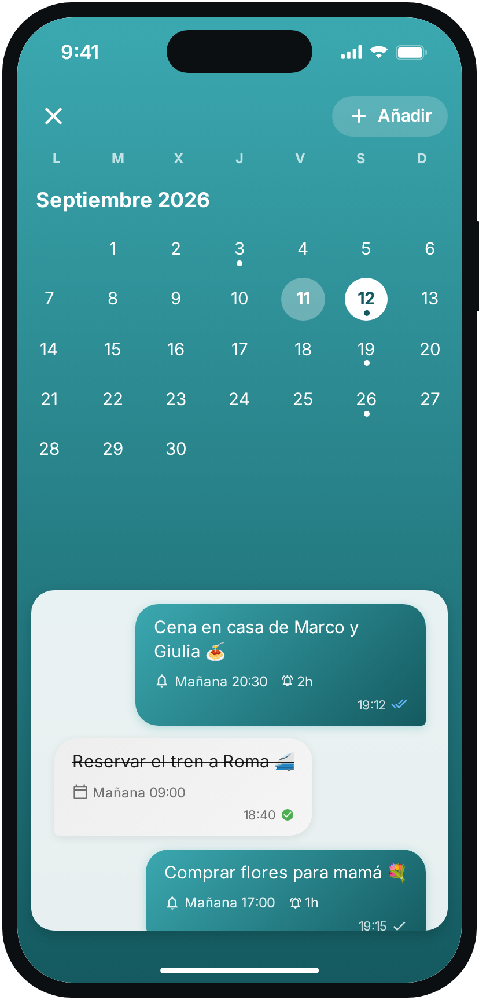
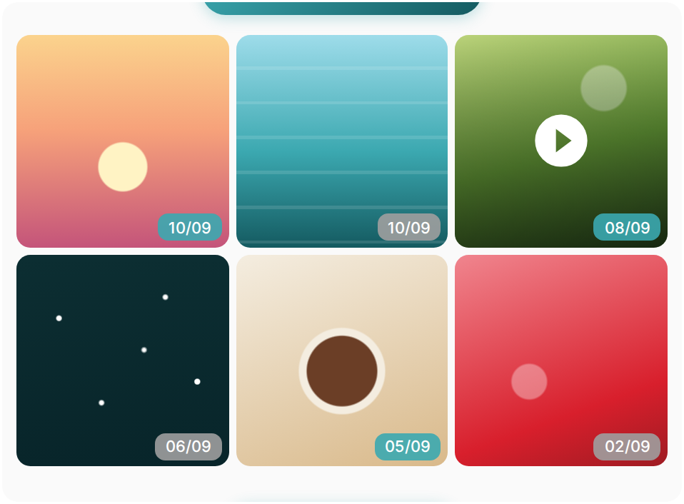
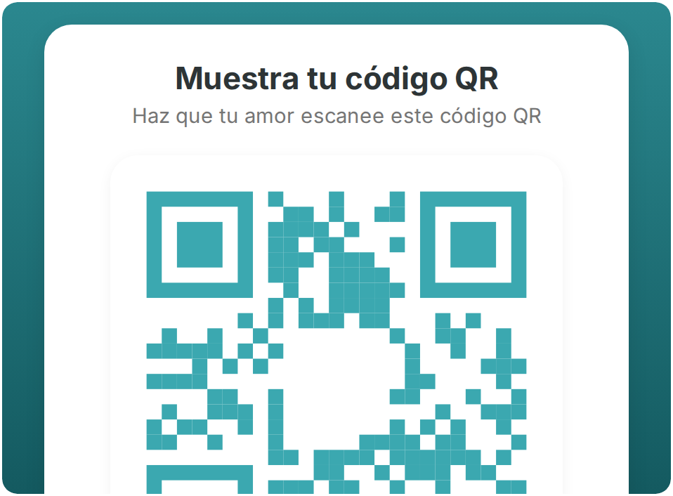

Tuijo. Para dos.
Un chat privado que vive solo en vuestros dos móviles.

iPhone y Android · español, italiano, inglés, catalán

Un chat privado que vive solo en vuestros dos móviles.
iPhone y Android · español, italiano, inglés, catalán

Cada mensaje se cifra en tu móvil y solo se vuelve a abrir en el suyo. Por el medio no pasa nadie.

El audio viaja peer-to-peer, directo de un móvil al otro, con la pantalla de llamada nativa de iOS y Android.

Comparte dónde estás durante una hora u ocho: una flecha, la distancia al metro, y después se apaga sola.

Un recordatorio con fecha y hora aparece en el chat de ambos, y una hora antes el aviso llega a los dos.

Fotos, vídeos, enlaces y documentos reunidos mes a mes, sin rebuscar en la conversación.

Sin correo, sin número de teléfono, sin contraseña. Un móvil muestra el código, el otro lo escanea.


Dos móviles, una conversación.Sin grupos, sin contactos, sin feed: Tuijo se conecta con una sola persona.
No es una promesa comercial: es como está hecha la app.
La clave privada nace en el dispositivo al primer inicio y nunca sale de él. No llega a nuestros servidores, así que no se le puede entregar a nadie.
Cada mensaje usa una clave AES-256 de un solo uso, cerrada a su vez con la clave pública de ambos dispositivos.
Por la nube circula texto ilegible. Las coordenadas de la ubicación también viajan cifradas y la sesión caduca sola.
RSA-2048 + AES-256 · sin cuenta y sin número de teléfono · zero-knowledge
En iPhone desde la App Store y en Android desde Google Play. La interfaz está disponible en español, italiano, inglés y catalán.
No. No hay registro: los dos móviles se reconocen intercambiando las claves públicas con un código QR, y desde ese momento la conversación existe solo entre ellos.
Las coordenadas se cifran con una clave dedicada a la sesión, que dura una u ocho horas y luego caduca. En el servidor no queda una ubicación legible.
No, y es una decisión de diseño: un dispositivo se empareja con otro dispositivo. No hay grupos ni agenda.